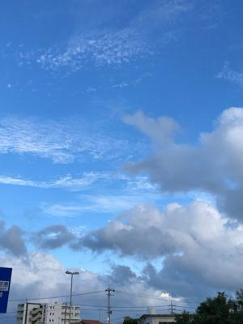
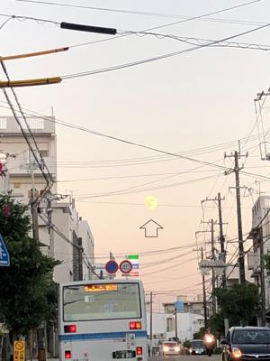
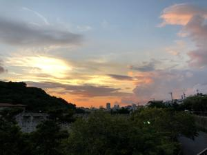

うるがいの話 ある日
最新: 月を見るうるがいとは 前提知識です
カニの画像をクリックすると『うるがいの話』サイトを表示します|
|
うるがい(ｳﾙｶﾞｲ urugai)とは、『もずくがに』の名前でとても大きくなります。 |
|---|---|
|
|
たながー（ﾀﾅｶﾞｰtanagaa）とは手長えびのことで、何種類かあり大きいのは車 エビぐらいになります。 |

|
ぶながー(bunagaa)とは、赤い髪の毛、赤い身体、そして身長は１ｍ２０ｃｍ ぐらい、川の蟹を食べているの目撃された。場所は沖縄県国頭郡大宜味村のと ある村僕の隣近所に住んでいる爺さんから、聞いた話です。 |
2021年09月22日 (水）月を見る
15:58
  
昨日満月を楽しみしていたが、あいにく曇りであっさりを諦める。夜８時少し
前に職場から帰るとき、満月を見ながら歩いて家まで帰った。いまは、７時前
にはジョギングも終えるのでそういうことはない。いいのか、悪いのかどうで
もいいが。今朝から腰が痛い、久々に痛い、今のところギックリ腰ではない。
あと、昨日夜中ネットをみているとしつこいほど、高市早苗氏の顔をみる。さ
っきネットニュースでは『しつこい！高市早苗氏だらけの”あおり”ネット広
告に批判噴出』とあった。ネットにお世話になっているが、時々迷惑も被って
いる。あー、腰が・・・・。あ！、新型コロナウイルス感染者者の数が１６２
人と、宣言は解除できるのでしょうか、・・。